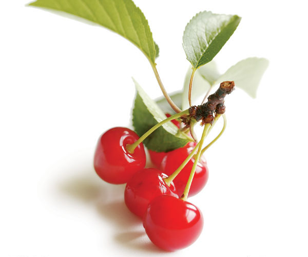

Sour Cherry

Ripe sour cherries and their leaves.
Prunus cerasus (sour cherry, tart cherry, or dwarf cherry) is a species of Prunus in the subgenus Cerasus (cherries), native to much of Europe and southwest Asia. It is closely related to the sweet cherry (Prunus avium), but has a fruit that is more acidic. Its sour pulp is edible.
The tree is smaller than the sweet cherry (growing to a height of 4–10 m), has twiggy branches, and its crimson-to-near-black cherries are borne upon shorter stalks.[citation needed] There are two main varieties (groups of cultivars) of the sour cherry: the dark-red morello cherry and the lighter-red amarelle cherry.